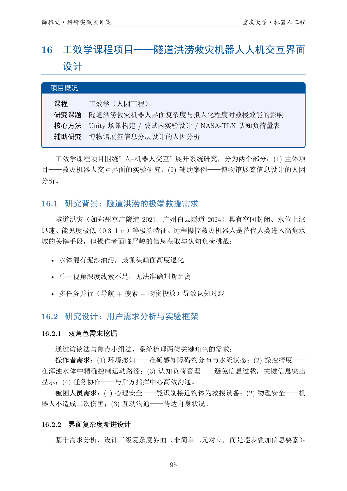
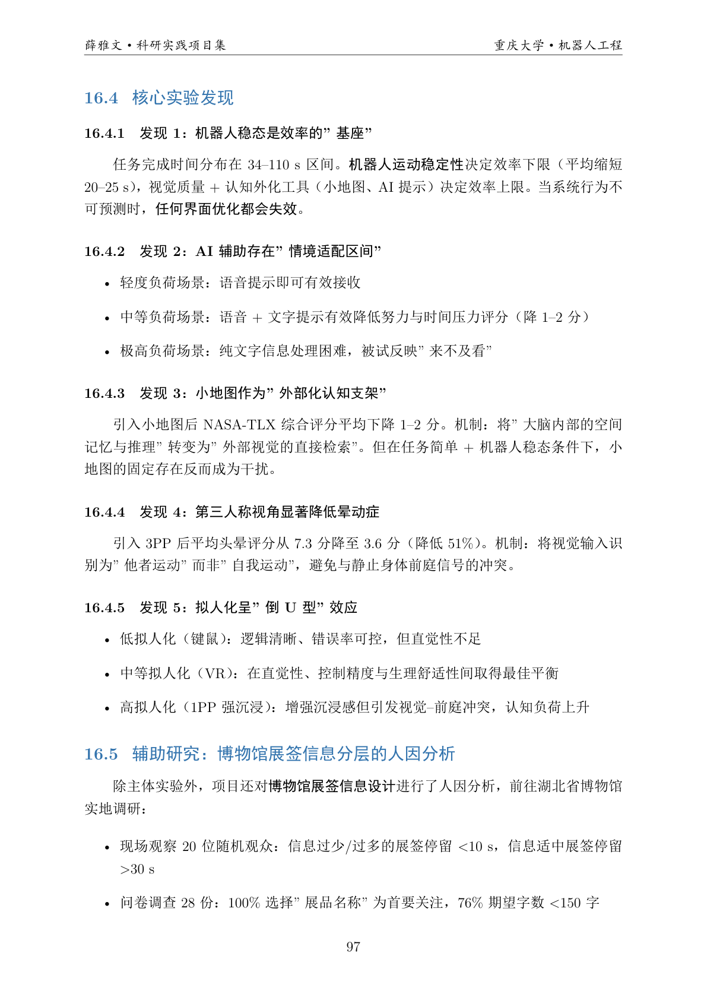
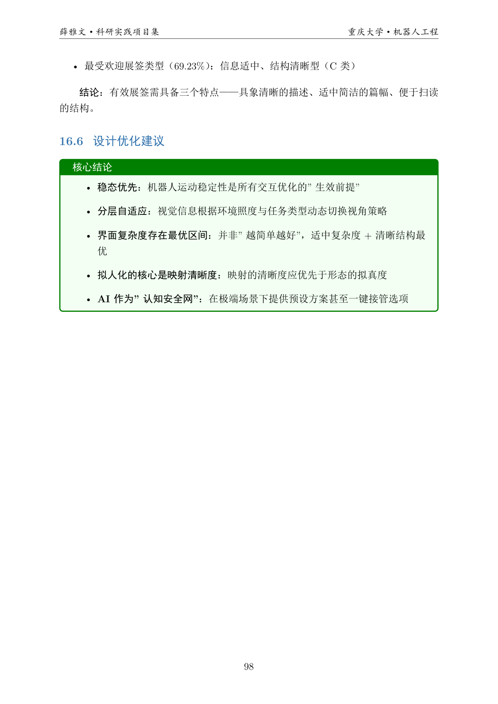

项目面向隧道洪涝极端救援场景，研究远程操控机器人的界面设计与认知负荷问题。 通过多条件被试内实验分析稳态控制、小地图、视角模式、AI 提示与拟人化程度等变量对任务效率和主观体验的影响， 提炼出“稳态优先、分层自适应、适度复杂度、映射清晰优先”的界面设计原则。
隧道洪灾场景具有低能见度、高风险、任务并发度高等特征。操作者在“导航 + 搜索 + 投放”的复合任务中 面临显著信息处理压力。项目围绕操作者与被困人员双角色需求，构建三级复杂度界面和两档拟人化方案， 在 Unity 虚拟隧道中开展系统实验。
| 变量维度 | 典型条件 | 目标 |
|---|---|---|
| 界面复杂度 | 基础 / 信息叠加 / 高密度 | 评估信息量与任务表现平衡点 |
| 视角模式 | 1PP / 3PP | 比较晕动症与空间感知 |
| AI 信息方式 | 语音 / 语音+文字 | 观察不同认知负荷下的提示有效性 |
| 拟人化程度 | 功能导向 / 拟人叠加 | 分析直觉性与负荷变化 |


